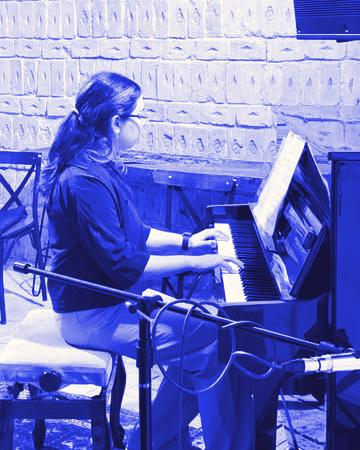
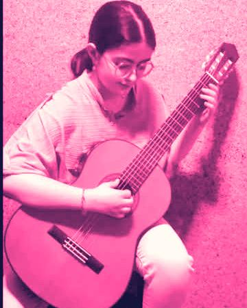
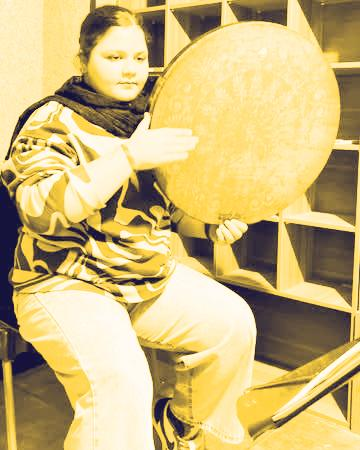
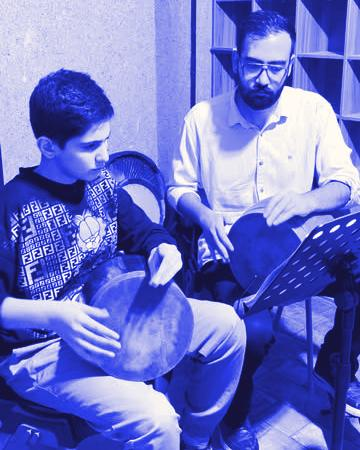
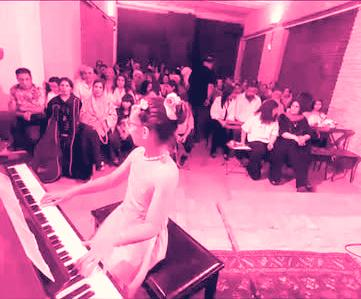
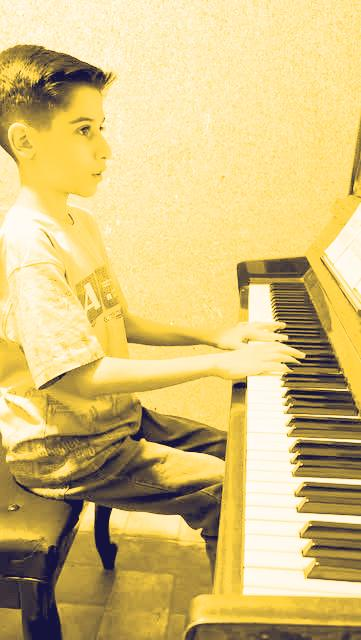
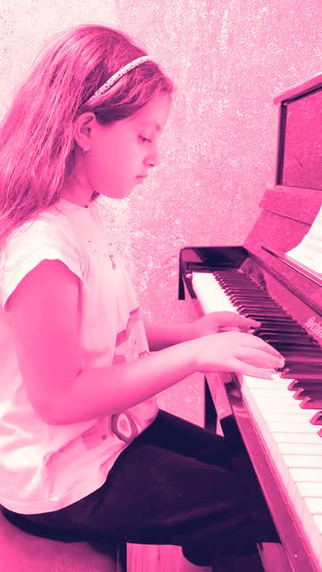
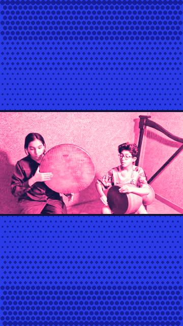
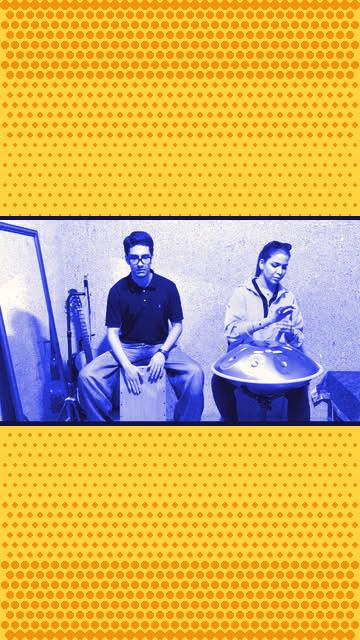

فقط گوش نده؛ بنواز!
کلاس ساز و آواز برای کودک، نوجوان و بزرگسال، با اساتید مجرب و سالن اجرای خودمان.
ثبت شد! بهزودی با شما تماس میگیریم.
نسخهی نمایشی: اطلاعات جایی ارسال نمیشود.



ساز مناسب تو
کدام ساز مال توست؟
سن را انتخاب کن؛ پیشنهادهای ما را ببین.
کودک
بلز و فلوت
شروع موسیقی برای کودکان
مشاوره برای این ساز
دف، تنبک و کاخن
ریتم و سازهای کوبهای
مشاوره برای این ساز
پیانو
نتخوانی و تکنیک از پایه
مشاوره برای این ساز
نوجوان

گیتار کلاسیک و الکتریک
از اولین آکورد تا اجرای قطعه
مشاوره برای این سازپیانو
نتخوانی، تکنیک و قطعهنوازی
مشاوره برای این سازآواز
تنفس، تکنیک صدا و اجرا
مشاوره برای این ساز
بزرگسال

سنتور
سنتور ایرانی با متد استاندارد
مشاوره برای این ساز
تار و سهتار
ردیف و موسیقی ایرانی
مشاوره برای این سازگیتار کلاسیک و الکتریک
از اولین آکورد تا اجرای قطعه
مشاوره برای این ساز
چرا سیساز؟

اساتید مجرب
هر کلاس با استادی که نوازندهی همان ساز است.
متد استاندارد
مسیر آموزش از پایه تا پیشرفته مشخص است.
کنسرت گروهی
هنرجوها در اجراهای گروهی سیساز روی صحنه میروند.
هنرجوهای ما، وسط نواختن
سیساز سالن اجرای خودش را دارد. هنرجوها در کنسرتهای گروهی جلوی خانواده و دوستانشان مینوازند.


پیانو، ریلز اینستاگرام (پنجرهی جدید)
پیانو، ریلز اینستاگرام (پنجرهی جدید)
دف و تنبک، ریلز اینستاگرام (پنجرهی جدید)
کاخن و هنگدرام، ریلز اینستاگرام (پنجرهی جدید)۷٬۷۵۹ دنبالکننده · ۵۴۳ پست
دنبال کردن @sisaz_music (پنجرهی جدید)چهار قدم تا اولین اجرا
- ۱
فرم را پر کنید یا تماس بگیرید
- ۲
جلسهی مشاوره و تعیین سطح
- ۳
شروع کلاس با استاد
- ۴
اولین اجرا روی صحنه
قبل از شروع، بپرس
از چند سالگی میشود شروع کرد؟
کودک، نوجوان و بزرگسال میتوانند شروع کنند. در جلسهی مشاوره، ساز و کلاس مناسب سن و سطح را با هم انتخاب میکنیم.
هنوز نمیدانم کدام ساز را انتخاب کنم.
اشکالی ندارد. بالای همین صفحه سن را انتخاب کن تا پیشنهادها را ببینی، یا در فرم «هنوز مطمئن نیستم» را بزن؛ در جلسهی مشاوره با هم تصمیم میگیریم.
سالن اجرا برای چیست؟
هنرجوها در کنسرتهای گروهی سیساز روی صحنه میروند. اجرا کنار کلاس، بخشی از مسیر یادگیری است.
شهریه و ساعت کلاسها چقدر است؟
به ساز و دوره بستگی دارد و هنگام تماس یا در جلسهی مشاوره اعلام میشود.
چطور ثبتنام کنم؟
شمارهات را بالای صفحه بنویس یا فرم پایین را پر کن، یا با ۷۷۹۲۹۲۹۳ تماس بگیر. بعد از هماهنگی، جلسهی مشاوره و تعیین سطح برگزار میشود.
ثبتنام و مشاوره
فرم را پر کنید؛ برای هماهنگی جلسهی مشاوره و تعیین سطح تماس میگیریم.
درخواست شما ثبت شد. برای هماهنگی تماس میگیریم.
نسخهی نمایشی: اطلاعات جایی ارسال نمیشود.